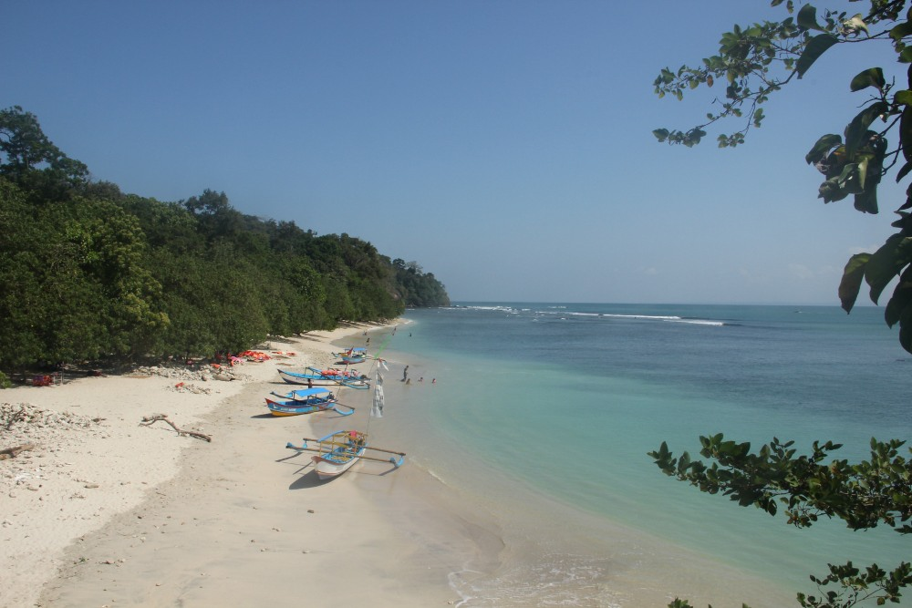

pantai marbela
Pantai marbela anyer letaknya ada di kecamatan Anyer Banten persis di depan Hotel Marbella tepatnya terletak di desa bandur Kecamatan Anyer Banten Kabupaten Serang Indonesia..

pantai pasir putih
Pantai Pantai Pasir Putih Sirih. Pantai yang satu ini juga memiliki hamparan pasir yang berwarna putih indah..
pantai pandan
Pantai Pandan Cerita memiliki beberapa keunikan yang membedakannya dari pantai-pantai lainnya di Banten. Salah satunya adalah keberadaan batu-batu karang yang indah dan tersebar di beberapa titik di sepanjang pantai. Batu-batu karang ini menciptakan pemandangan yang eksotis, terutama saat air laut sedang surut..